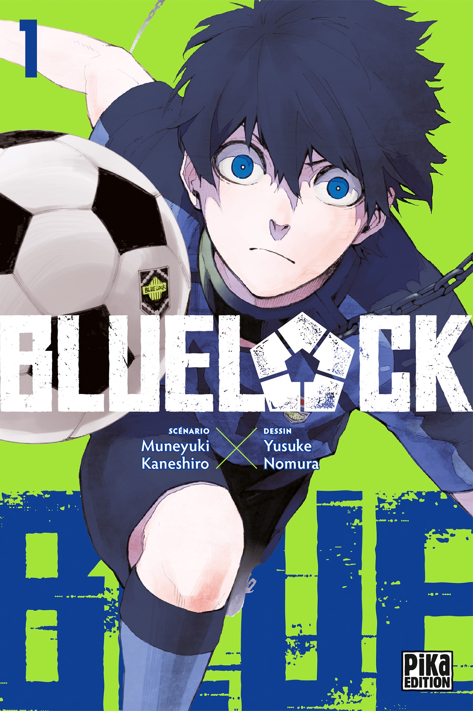

Sección Semanal

Bleach Temporada 1
Ichigo Kurosaki es un estudiante de instituto de 15 años, que tiene una peculiaridad: es capaz de ver, escuchar y hablar con fantasmas.

Bluelock Temporada 1
Yoichi es un joven al que acaban de eliminar junto a su equipo. De pronto recibe una carta donde lo convocan para participar en un extraño experimento

Dandadan Temporada 1
Takakura es un joven amante de lo oculto que no cree en fantasmas, mientras que su amiga, Ayase, no cree en los alienígenas, pero juntos se toparán con un misterio que desafiará todas sus creencias y convenciones. ¡¡Comienza una historia adolescente terrorífica!!.

DragonBall Temporada 1
Goku es un extraño y alegre niño que pasa sus días cazando y comiendo hasta que un día conoce a Bulma, una chica muy linda, inteligente y que solo piensa en chicos. Bulma está buscando las Dragon Balls, unas esferas mágicas que se dice que si se reúnen las siete, se te concederá cualquier deseo, ¡y Goku tiene una que le dejó su abuelo como recuerdo! Esto será el inicio de una gran aventura.

Naruto Temporada 1
Naruto Uzumaki es un niño marginado en la aldea ninja en la que vive. En su interior reside el poder de una bestia que estuvo al borde de destruir el pueblo años atrás, el Kyubi, el zorro de nueve colas, lo que hace que nadie quiera acercarse a él por considerarlo maldito. Pese a su soledad y su tristeza, Naruto quiere ser un ninja, pero no uno cualquiera: quiere ser Hokage, el líder de la aldea. En su camino, sus convicciones atraerán a muchos amigos y compañeros de viaje.
Sección Mensual

One Piece Temporada 1
Una historia épica de piratas, donde narra la historia de "Monkey D. Luffy" quien cuado tenia 7 años, comió accidentalmente una "Akuma no mi"(Futa del diablo) la cual le dio poderes de goma. Por otra parte "Gol D. Roger" conocido como "El rey de los Piratas" quien fuera ejecutado por la Marine, habló antes de morir, acerca de su famoso tesoro "One Piece" escondido en la "Gran line".

Sailor Moon Temporada 1
Serena es una chica de secundaria muy desobligada y poco dedicada, pero su vida cambiara cuando conozca a Luna una gata con poderes mágicos que la convertirá en una Sailor Scout, a su lado tendrá que luchar por la justicia en contra del Reino de la Oscuridad, en sus misiones cruzara camino con Tuxedo Mask un héroe enmascarado del quien pronto se enamorara.

Solo Leveling Temporada 1
Lo que no te mata te hace más fuerte, pero en el caso de Sung Jinwoo, lo que lo mató lo hizo más fuerte. Después de ser brutalmente asesinado por monstruos en una mazmorra de alto rango, Jinwoo regresó con el Sistema, un programa que solo él puede ver y que eleva su nivel en todos los sentidos.

Mi vecino Totoro
En los años 50, una familia japonesa se traslada al campo. Las dos hijas, Satsuki y Mei, entablan amistad con Totoro, un espíritu del bosque. El padre es un profesor universitario que estimula la imaginación de sus hijas relatándoles fábulas e historias mágicas sobre duendes, fantasmas y espíritus protectores de los hogares, mientras la madre se encuentra enferma en el hospital.

Wind Breaker Temporada 1
El lugar donde las calificaciones medias son las peores, pero las peleas son las mejores. La Preparatoria Furin es bien conocida por ser una preparatoria repleta de delincuentes. Haruka Sakura, estudiante de primer año, llega como novato con ganas de abrirse paso luchando hasta lo más alto.
Sección Anual
Naruto Temporada 1
Naruto Uzumaki es un niño marginado en la aldea ninja en la que vive. En su interior reside el poder de una bestia que estuvo al borde de destruir el pueblo años atrás, el Kyubi, el zorro de nueve colas, lo que hace que nadie quiera acercarse a él por considerarlo maldito. Pese a su soledad y su tristeza, Naruto quiere ser un ninja, pero no uno cualquiera: quiere ser Hokage, el líder de la aldea. En su camino, sus convicciones atraerán a muchos amigos y compañeros de viaje.
Sailor Moon Temporada 1
Serena es una chica de secundaria muy desobligada y poco dedicada, pero su vida cambiara cuando conozca a Luna una gata con poderes mágicos que la convertirá en una Sailor Scout, a su lado tendrá que luchar por la justicia en contra del Reino de la Oscuridad, en sus misiones cruzara camino con Tuxedo Mask un héroe enmascarado del quien pronto se enamorara.
DragonBall Temporada 1
Goku es un extraño y alegre niño que pasa sus días cazando y comiendo hasta que un día conoce a Bulma, una chica muy linda, inteligente y que solo piensa en chicos. Bulma está buscando las Dragon Balls, unas esferas mágicas que se dice que si se reúnen las siete, se te concederá cualquier deseo, ¡y Goku tiene una que le dejó su abuelo como recuerdo! Esto será el inicio de una gran aventura.
One Piece Temporada 1
Una historia épica de piratas, donde narra la historia de "Monkey D. Luffy" quien cuado tenia 7 años, comió accidentalmente una "Akuma no mi"(Futa del diablo) la cual le dio poderes de goma. Por otra parte "Gol D. Roger" conocido como "El rey de los Piratas" quien fuera ejecutado por la Marine, habló antes de morir, acerca de su famoso tesoro "One Piece" escondido en la "Gran line".
Mi vecino Totoro
En los años 50, una familia japonesa se traslada al campo. Las dos hijas, Satsuki y Mei, entablan amistad con Totoro, un espíritu del bosque. El padre es un profesor universitario que estimula la imaginación de sus hijas relatándoles fábulas e historias mágicas sobre duendes, fantasmas y espíritus protectores de los hogares, mientras la madre se encuentra enferma en el hospital.

One Piece
Barely surviving in a barrel after passing through a terrible whirlpool at sea, carefree Monkey D. Luffy ends up aboard a ship under attack by fearsome pirates…

Makeine: Too Many Losing Heroines! (2024)
Kazuhiko Nukumizu, a self-proclaimed "background character", accidentally witnessed his popular classmate Anna Yanami being rejected by her childhood friend.
Sousou no Frieren (2023)
As the years pass, Frieren gradually realizes how her days in the hero's party truly impacted her. Witnessing the deaths of two of her former companions, Frieren begins to regret…

Jujutsu Kaisen 2nd Season (2023)
Sorcerers are the frontline defense against the rising number of high-level curses born from humans' negative emotions. As the entities grow in power, their self-awareness and ambition increase too…

Dandadan (2024)
Takakura is a young occult-loving man who doesn't believe in ghosts, while his friend, Ayase, doesn't believe in aliens, but together they will stumble upon a mystery that will defy all their beliefs and conventions…